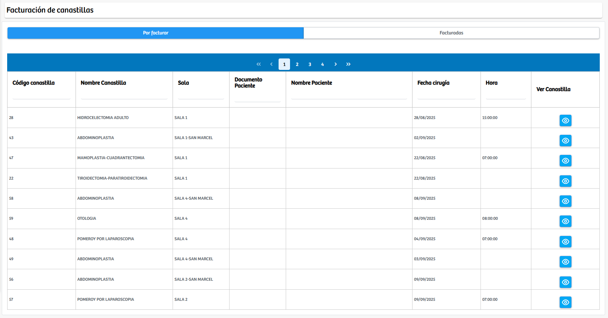
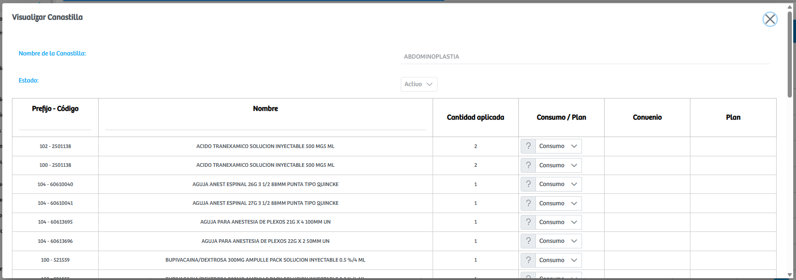

Modulos Sas-Web
Funcionalidades
Facturacion Canastillas
El módulo Facturación de Canastillas permite gestionar el proceso de revisión y cobro de las canastillas quirúrgicas utilizadas en los procedimientos de los pacientes. La interfaz ofrece dos vistas principales: Por facturar, donde se listan todas las canastillas pendientes de facturación junto con información relevante como el código y nombre de la canastilla, sala asignada, datos del paciente, fecha y hora del procedimiento; y Facturadas, que muestra el historial de canastillas que ya fueron procesadas.
Cada registro incluye un botón de visualización que permite acceder al detalle completo de la canastilla, mostrando los medicamentos e insumos que la componen, las cantidades aplicadas y la clasificación de consumo. Desde esta ventana también se habilita la opción de realizar la facturación correspondiente. Este módulo centraliza y facilita el control administrativo de los insumos utilizados en procedimientos quirúrgicos, asegurando un proceso de facturación ordenado, transparente y alineado con el consumo real registrado para cada intervención.
